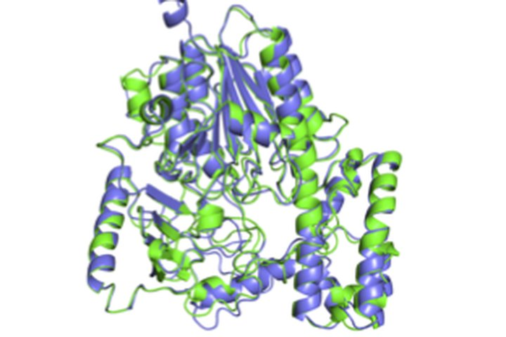

Proteins
Predicting a protein's 3D shape from its amino-acid sequence, and what mutations do to it. OmegaFold makes high-resolution predictions from a single sequence, without the multiple sequence alignments that AlphaFold2 depends on. FastFold makes AlphaFold training and inference faster on GPU clusters. In a study of influenza neuraminidase, lab measurements of more than 6,000 mutations agreed well with fitness inferred by a protein language model.